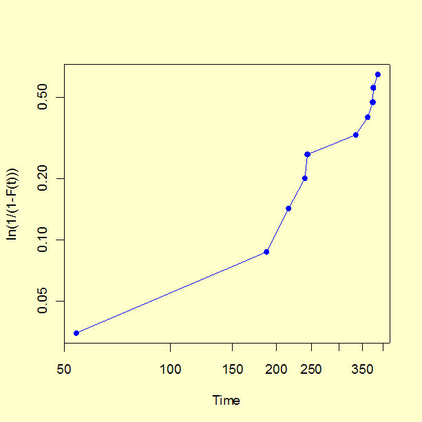

|
8.
Assessing Product Reliability
8.2. Assumptions/Prerequisites 8.2.2. How do you plot reliability data?
|
|||||||||||||||||||||||||||||||||||||||||||||
| Use probability plots to see your data and visually check model assumptions |
Probability plots are simple visual ways of summarizing reliability
data by plotting CDF
estimates versus time using a log-log scale.
The \(x\) axis is labeled "Time" and the axis is labeled "cumulative percent" or "percentile". There are rules, independent of the model, for calculating plotting positions (points) from the reliability data. These only depend on the type of censoring in the data and whether exact times of failure are recorded or only readout times. |
||||||||||||||||||||||||||||||||||||||||||||
| Plot each failure mode separately | Remember that different failure modes can and should be separated out and individually analyzed. When analyzing failure mode A, for example, treat failure times from failure modes B, C, etc., as censored run times. Then repeat for failure mode B, and so on. | ||||||||||||||||||||||||||||||||||||||||||||
| Data points line up roughly on a straight line when the model chosen is reasonable | When the points are plotted, the analyst fits a straight line to the data (either by eye, or with the aid of a least squares fitting program). Every straight line on, say, a Weibull probability plot uniquely corresponds to a particular Weibull life distribution model and the same is true for lognormal or exponential plots. If the points follow the line reasonably well, then the model is consistent with the data. If it was your previously chosen model, there is no reason to question the choice. In addition, there is a simple way to find the parameter estimates that correspond to the fitted straight line. | ||||||||||||||||||||||||||||||||||||||||||||
| Plotting positions on the \(x\) axis depend on the type of data censoring |
Plotting Positions:
Censored Data (Type I or Type II)
At the time \(t_i\) of the \(i\)-th failure, we need an estimate of the CDF (or the cumulative population percent failure). The simplest and most obvious estimate is just \(100(i/n)\) (with a total of \(n\) units on test). This, however, is generally an overestimate (i.e. biased). Various texts recommend corrections such as \(100(i-0.5)/n\) or \(100i/(n+1)\). Here, we recommend what are known as (approximate) median rank estimates. For each time \(t_i\) of the \(i\)-th failure, calculate the CDF or percentile estimate using \(100(i-0.3)/(n+0.4)\). Plotting Positions: Readout Data Let the readout times be \(T_1, \, T_2, \, \ldots, \, T_k\) and let the corresponding new failures recorded at each readout be \(r_1, \, r_2, \, \ldots, \, r_k\). Again, there are \(n\) units on test. For each readout time \(T_j\), calculate the CDF or percentile estimate using $$ \frac{100 \sum_{i=1}^j r_i}{n} \, . $$ Plotting Positions: Multicensored Data The calculations are more complicated for multicensored data. K-M estimates (described in a preceding section) can be used to obtain plotting positions at every failure time. The more precise Modified K-M Estimates are recommended. They reduce to the Censored Type I or the Censored Type II median rank estimates when the data consist of only failures, without any removals except possibly at the end of the test. |
||||||||||||||||||||||||||||||||||||||||||||
| Plotting positions on the \(y\) axis depend on the reliability model |
The general idea is to take the model CDF equation and write it in such a way
that a function of \(F(t)\)
is a linear equation of a function of \(t\).
This will be clear after a few examples. In the formulas that follow, "ln" always
means "natural logarithm", while "log" always means "base 10 logarithm".
a) Exponential Model: Rewrite the exponential CDF as $$ \mbox{ln} \left( \frac{1}{1-F(t)} \right) = \lambda t \, , $$ or, equivalently, $$ \mbox{log} \left( \frac{1}{1 - F(t)} \right) = \frac{\lambda}{\mbox{ln } 10} t \, . $$ If we let \(y = 1/[1-F(t)]\) and \(x = t\), then \(\mbox{log } y\) is linear in \(x\) with slope \(\lambda / \mbox{ln } 10\). Thus, we can make an exponential probability plot by using a logarithmic \(y\) axis. Use the plotting position estimates for \(F(t_i)\) described above (without the 100 × multiplier) to calculate pairs of \((x_i,\, y_i)\) points. If the data are consistent with an exponential model, the resulting plot will have points that line up almost as a straight line going through the origin with slope \(\lambda / \mbox{ln } 10\). b) Weibull Model: Rewrite the Weibull CDF as $$ \mbox{ln ln } \left( \frac{1}{1-F(t)} \right) = \gamma \mbox{ ln } t - \gamma \mbox{ ln } \alpha $$ or $$ \mbox{log ln } \left( \frac{1}{1-F(t)} \right) = \gamma \mbox{ log } t - \gamma \mbox{ log } \alpha \, . $$ If we let \(y = \mbox { ln }(1/[1-F(t)])\) and \(x = t\), then \(\mbox{log } y\) is linear in \(\mbox{log } x\) with slope \(\gamma\). Thus, we can make a Weibull probability plot using a log-log scale. Use the plotting position estimates for \(F(t_i)\) (without the 100 × multiplier) to calculate pairs of \((x_i, \, y_i)\) points. If the data are consistent with a Weibull model, the resulting plot will have points that line up roughly on a straight line with slope \(\gamma\). This line will cross the \(\mbox{log } x\) axis at time \(t = \alpha\) and the \(\mbox{log } y\) axis (i.e., the intercept) at \(-\gamma \mbox{ log } \alpha\). c) Lognormal Model: Rewrite the lognormal cdf as $$ \mbox{ln } t = \sigma \, \Phi^{-1} \left[ F(t) \right] + \mbox { ln } T_{50} $$ or, $$ \mbox{log } t = \frac{\sigma}{\mbox{ln } 10} \Phi^{-1} \left[ F(t) \right] + \mbox{ log } T_{50} \, , $$ with \(\Phi^{-1}\) denoting the inverse function for the standard normal distribution (taking a probability as an argument and returning the corresponding "\(z\)" value). If we let \(y = t\) and \(x = \Phi^{-1}[F(t)]\) then \(\mbox{log } y\) is linear in \(x\) with slope \(\sigma / \mbox{ln } 10\) and intercept (when \(F(t)\) = 0.5) of \(\mbox{log } T_{50}\). We generate a lognormal probability plot using a logarithmic \(y\) axis. Use the plotting position estimates for \(F(t_i)\) (without the 100 × multiplier) to calculate pairs of (\(x_i, \, y_i\)) points. If the data are consistent with a lognormal model, the resulting plot will have points that line up roughly on a straight line with slope \(\sigma / \mbox{ln } 10\) and intercept \(T_{50}\) on the \(\mbox{log } y\) axis. d) Extreme Value Distribution (Type I - for minimum): Rewrite the extreme value distribution CDF as $$ \mbox{ln } \left\{ -\mbox{ ln } [1 - F(x)]\right\} = (x - \mu)/\beta \, . $$ If we let \(y = -\mbox{ ln }[1 - F(x)]\), then \(\mbox{ln } y\) is linear in \(x\) with slope 1/\(\beta\) and intercept \(-\mu / \beta\). We plot \(y\) versus \(x\) where the \(y\) axis is base 10 logarithmic. The points should follow a straight line with a slope of \((1/\beta) \cdot \mbox{ln } 10\) and an intercept of (\(-\mu/\beta) \cdot \mbox{ln } 10\). The \(\mbox{ln } 10\) factors in the slope and intercept are needed because the plot uses a base 10 logarithmic axis. |
||||||||||||||||||||||||||||||||||||||||||||
| A Weibull example of probability plotting | We generated 20 random
Weibull failure times with a shape parameter of
\(\gamma\) = 1.5 and \(\alpha\) = 500.
Assuming a test time of \(T\) = 500 hours,
only 10 of these failure times would have been observed. They are,
to the nearest hour: 54, 187, 216, 240, 244, 335, 361, 373, 375, and 386.
We will compute plotting position CDF estimates based on these failure
times, and then generate a probability plot.
We generate a probability plot using column (4) versus column (2) and log-log scale axes.  Note that the configuration of points appears to have some curvature. This is mostly due to the very first point on the plot (the earliest time of failure). The first few points on a probability plot have more variability than points in the central range and less attention should be paid to them when visually testing for "straightness". |
||||||||||||||||||||||||||||||||||||||||||||
| Use of least squares (regression) to fit a line through the points on a probability plot |
Since our data are plotted on a log-log scale, we fit a straight line
using \(\mbox{log } x\)
as the independent variable and \(\mbox{log } y\)
as the dependent variable.
The regression produces a slope estimate of 1.46, which is close to the 1.5 value used in the simulation. The intercept is -4.114 and setting this equal to \(-\gamma \mbox{ log } \alpha\) we estimate \(\alpha\) = 657 (the "true" value used in the simulation was 500). The analyses in this section can can be implemented using both Dataplot code and R code. Both packages have special functions to automatically generate probability plots for a wide variety of distributions. |
||||||||||||||||||||||||||||||||||||||||||||